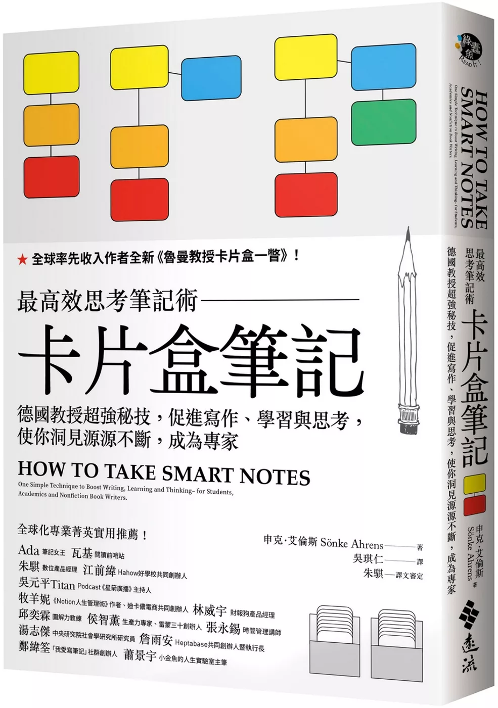
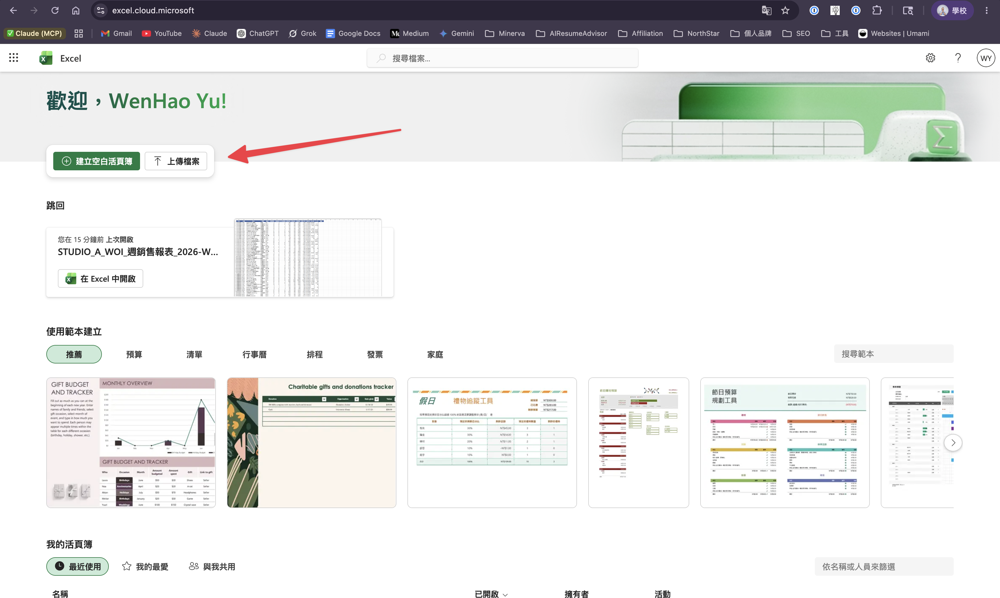
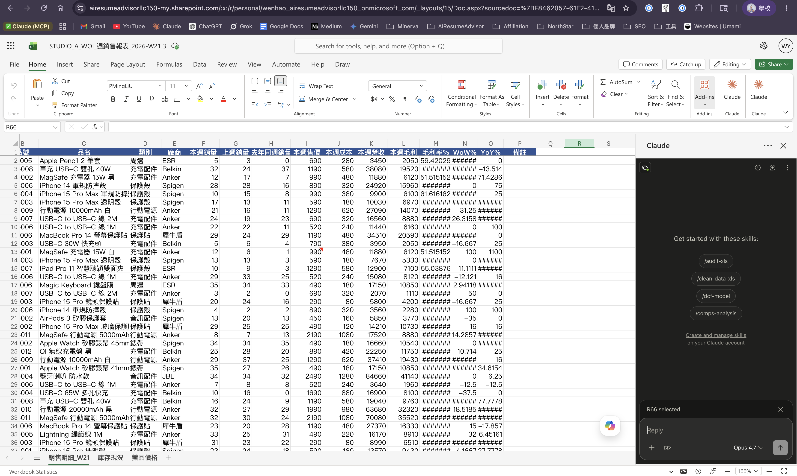
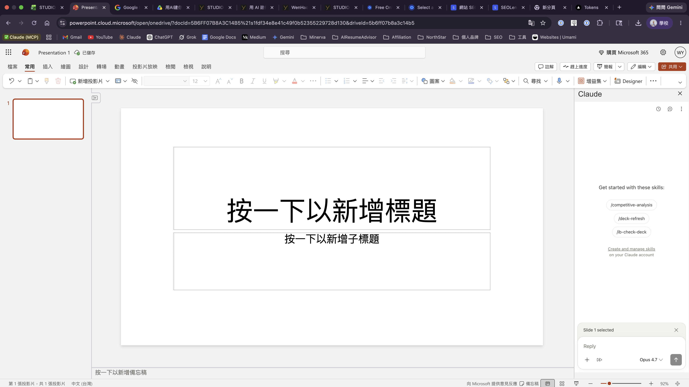

01 / 72DAY 1 / 3 · 開場 · BLOCK 0
用 AI 工作流
做你的商品決策
做你的商品決策
三日工作坊 ｜ D1 上手 + 實作 · 2026 / 06 / 02
講師 余文皓
STUDIO A · 階段 3 · B 組
STUDIO A · AI × 商品決策分析 · D1
HOOK你每天都在搬
你每天 ——
都在搬資料。
都在搬資料。
SCENE 01 · 09 : 00
一坐下、
腦袋自動開始想。
腦袋自動開始想。
翻信箱
翻群組
翻 Excel
翻昨天還沒做完的
SCENE 02 · 11 : 00
已經做了三件事 ——
但「這週的數字」還沒對完。
但「這週的數字」還沒對完。
主管要的報表還沒整理
門市那份還沒撈
跨部門那份還沒核
中午之前、漏一兩件。明天會再漏一次。
02 / 72
BLOCK 0 · HOOK
INSIGHTSYSTEM, NOT TOOLS
你缺的不是工具、
是系統。
是系統。
工具自己接、自己跑。
人只負責決策。
人只負責決策。
03 / 72
PROOF不是空話
但這不是空話 ——
Peggy 兩個月前開始用。
做了 6 個自動化。
每月省 23 小時 —— 將近 3 個工作天。
04 / 72
BLOCK 0 · PROOF
WHY ME為什麼是我來教
Peggy 用的這套 AI Workspace ——
今天輪到你。
今天輪到你。
我做的、Peggy 落地兩個月、你 4 小時帶走一套。
01 · INDIE HACKER
一個人做
4 個產品
4 個產品
yu-wenhao.com
NeatToolkit
AI Resume Advisor
SEOLens
NeatToolkit
AI Resume Advisor
SEOLens
02 · ENTERPRISE
企業 AI
工作流設計
工作流設計
講師 + 顧問
Claude Code 第一批使用者
5/16 台北 · 6/7 台中 · 8/22 公開班
STUDIO A 三日工作坊
Claude Code 第一批使用者
5/16 台北 · 6/7 台中 · 8/22 公開班
STUDIO A 三日工作坊
03 · WRITING
部落格 ·
AI 工作流
AI 工作流
Claude Code 教學
Claude Skill
AI Harness
OpenClaw
—— 皆 Google Top 3
月瀏覽 150,000+
Claude Skill
AI Harness
OpenClaw
—— 皆 Google Top 3
月瀏覽 150,000+
05 / 72
BLOCK 0 · WHY ME
THE JOURNEY接下來 4 小時
4 小時 · 5 段落 ·
4 件帶走的東西。
4 件帶走的東西。
13 : 30
B0 · 開場（現在）
13 : 55
B1 · AI Workspace 完整講
15 : 00
B2 · 讓 AI 接手你的工作
16 : 20
B3 · 2 小時 → 20 分鐘
17 : 20
B4 · 派作業 + 真實 EOD 收工
下課時你帶走 ——
不再每天早上從零想要做什麼
工作不再散落、AI 認得每一塊
下班 4 分鐘 · 跟 Claude 寫完 daily note
從數據整理到簡報 · 2 小時 → 20 分鐘
06 / 72
BLOCK 0 · THE JOURNEY
BLOCK 1你的工具
你今天用的
工具是什麼？
工具是什麼？
Claude 不只一個產品 ——
是一個生態系。
是一個生態系。
07 / 72
BLOCK 1 · CLAUDE 生態系 + FLUX · 60 MIN
L1 · YOU TALK TO CLAUDE4 個 host 平台
Claude 給你 ——
4 個地方跟它對話。
4 個地方跟它對話。
01 / 04
Claude.ai
BROWSER
開分頁、跟它聊天。
跟 ChatGPT 同一類。
跟 ChatGPT 同一類。
★ 今天主角
02 / 04
Claude Code
LOCAL
跟你的檔案在同一空間 ——
能讀、能寫、能跑腳本。
能讀、能寫、能跑腳本。
03 / 04
Claude Cowork
DESKTOP APP
知識工作者用的、2026 / 04 GA。
跟 Code 像、長相不同。
跟 Code 像、長相不同。
04 / 04
Claude API
DEVELOPER
工程師串接用、今天不用。
知道有這東西就好。
知道有這東西就好。
08 / 72
BLOCK 1 · L1 HOST 平台
WHY CODE第一個分界
為什麼
不用 Claude.ai？
不用 Claude.ai？
在瀏覽器
CLAUDE.AI
✗ 讀不到你電腦的目標檔案
✗ 存不了整理好的內容
✗ 只能在分頁裡跟你講話
這是
第一個分界
第一個分界
在你電腦上
CLAUDE CODE
✓ 跟你的檔案在同一空間
✓ 能讀、能寫、能跑腳本
✓ 有 CLAUDE.md 記得你是誰
09 / 72
BLOCK 1 · WHY CODE
THE COWORK QUESTION第二個分界
那 Cowork 呢？
CLAUDE COWORK
桌面 App · 給知識工作者
2026 / 04 正式上線。
跟 Code 一樣 —— 也在你電腦上、也能讀寫檔案。
跟 Code 一樣 —— 也在你電腦上、也能讀寫檔案。
Cowork 也在你電腦上、也能讀寫檔案 ——
那為什麼不用 Cowork？
10 / 72
BLOCK 1 · COWORK?
SHAPE形狀論
差別在形狀。
COWORK
有形狀
桌面 App · GUI · 預設工作流 ——
Anthropic 想好的形狀。
Anthropic 想好的形狀。
vs
CODE
沒形狀
Terminal · 對話框 · 讀寫檔案 ——
裝得進任何形狀。
裝得進任何形狀。
Cowork 有形狀。 Code 沒形狀。
11 / 72
BLOCK 1 · SHAPE
FITS ANY SHAPE萬用
沒形狀、
代表它裝得進任何形狀。
代表它裝得進任何形狀。
跑 WOI 預估→可以
教育價核對→可以
整理 momo 比價→可以
算毛利率異常→可以
寫商品決策日報→可以
跑副廠週邊週報→可以
整理會議記錄→可以
回覆門市信→可以
做競品研究→可以
YOY / MOM 比較→可以
跑週會 + EOD→可以
⋯⋯→都可以
一個工具、所有事。
12 / 72
BLOCK 1 · FITS ANY SHAPE
YOUR CODESHAPE
這趟跑完 ——
你電腦上會有一個 Code。
它的形狀、
長得像你的工作。
長得像你的工作。
13 / 72
BLOCK 1 · YOUR CODE
L2 · CLAUDE 嵌在哪3 個 integrations
Claude 不只在 Code ——
它嵌在你的 Excel 和 PPT 裡。
它嵌在你的 Excel 和 PPT 裡。
01 / 03
▦
Claude for Excel
B4 會用到
Excel 試算表裡的 sidebar、
能讀公式 + 算數據。
能讀公式 + 算數據。
02 / 03
◐
Claude for PowerPoint
B4 會用到
PPT 裡的 sidebar、
從你資料生 slide。
從你資料生 slide。
03 / 03
◆
Claude Design
D2 會用到
跟 Canva 同類的設計工具、
Claude 內建。
Claude 內建。
今天你會用：Claude Code（host）+ Excel / PPT 裡的 Claude（plug-in）。
D2 會用：Claude Design（獨立工具、生 slide）。
D2 會用：Claude Design（獨立工具、生 slide）。
14 / 72
BLOCK 1 · L2 INTEGRATIONS
YOUR WORKBENCH環境 · 4 個工具
今天的
工作環境。
工作環境。
4 個工具 · 先把名字對齊。
對齊名字 + 位置 —— 不囉嗦、進 hands-on。
▸ VS CODE
/ TERMINAL
/ OBSIDIAN
/ MARKDOWN
15 / 72
BLOCK 1 · ENVIRONMENT
THE WORKSPACEVS CODE
Claude Code 跑在終端機。
我們今天用 VS Code 開。
我們今天用 VS Code 開。
FLUX-standard-studio-a — Visual Studio Code
1FLUX-STANDARD-STUDIO-A
📁 Inbox
📁 Cockpit
📁 Efforts
📁 Calendar
📁 Atlas
📁 Guides
📁 Templates
📄 CLAUDE.md
2# Cockpit / Weekly-Commitment.md
# 本週
- Week：W23（2026-06-02 → 06-06）
- [ ] 副廠週邊 WOI 預估
- [ ] momo 比價週報
- [x] 商品決策日報
3▾ TERMINAL
~/FLUX-standard-studio-a $ claude
早安。今天要做什麼？
>
1
File Tree
檔案總管 · 你的 Vault 攤在這
2
編輯器
看 Claude 改 · 你自己也改
3
Terminal ★ CLAUDE CODE 跑在這
跟 Claude 對話的入口
Claude Code 跑在終端機裡 ——
VS Code 把它跟你的檔案 + 編輯器擺在一起。
VS Code 把它跟你的檔案 + 編輯器擺在一起。
16 / 72
BLOCK 1 · THE HOST
THE LENSOBSIDIAN
Obsidian 是看 Vault 的窗。

Obsidian = Vault 的窗
— 免費、跨平台、可離線
— Wikilink 互連、graph view 視覺化
— 你看 Vault 就用它
同一份 .md 檔 · 兩個視角
— Claude 在 Terminal 改、你在 Obsidian 看
— 中間不轉檔、即時同步
— 下一頁講 Markdown 格式本身
17 / 72
BLOCK 1 · THE LENS
THE REVEALNAMING · THE COCKPIT
Peggy 用的這套 AI Workspace ——
我把它的設計命名為 ——
我把它的設計命名為 ——
FLUX
給你的指揮中心。
FOCUS · LEARN · UPGRADE · EXECUTE
18 / 72
BLOCK 1 · THE REVEAL · AI WORKSPACE = PRODUCT · FLUX = 框架
THE LOOP4 LETTERS · 1 CYCLE
一個循環、不是清單。
F
Focus
專注目標
早上開工、聚焦今天 3 件事
L
Learn
連結知識
把今天學到的、寫進 Atlas
U
Upgrade
迭代升級
調 CLAUDE.md · 加 Skill · 助理越用越懂你
X
eXecute
每日執行
隔天開工、循環接起來
設目標 →
累積知識 →
升級系統 →
執行 ↻
重新校準
19 / 72
BLOCK 1 · THE LOOP
THREE LAYERSFLUX 有層次
FLUX 不是平鋪的、
是有層次的。
是有層次的。
UPPER
場景
你的工作流
跑開工 · WOI 預估 · 教育價核對 · 商品決策日報 · 整理會議記錄 ⋯⋯
↑ 疊在它上面 ↑
MIDDLE
原子能力
觸發語 · Skill
「開工」「整理這份 Excel」「研究 [主題]」「[歸檔]」⋯⋯
↑ 疊在它上面 ↑
FOUNDATION
底座
FLUX Vault
資料夾結構（Inbox / Cockpit / Efforts / Calendar / Atlas / Guides / Templates）+ CLAUDE.md
原則：底座沒打好、上面都會歪。
你的底座已就位 —— AI 從這帶你前進。
FLUX Vault + CLAUDE.md 已配置 · 今天動 UPPER + MIDDLE · D2 D3 擴充底座
20 / 72
BLOCK 1 · LAYERS
THE METHODOLOGYPARA + 卡片盒 + 12WY
FLUX 站在三套方法論上 ——
管行動 + 管知識 + 管執行。
管行動 + 管知識 + 管執行。
PARA · 管行動

Tiago Forte《打造第二大腦》
P · Projects — 有 deadline
A · Areas — 持續經營
R · Resources — 主題參考
A · Archive — 沉睡舊案
→ Efforts/ 資料夾
STUDIO A 日常動 P + A · R / Archive 之後再分
卡片盒筆記 · 管知識

Luhmann · Sönke Ahrens《卡片盒筆記》Zettelkasten
· Dots — 一卡一概念
· Sources — 書 / 影片 / Link
· Wikilink — 卡片互相連結
· Maps — 主題索引（把相關 Dots 串起來）
→ Atlas/ · LYT (Nick Milo) Obsidian 實現
D2 主菜深教 · 你會建第一張 Dot 卡
12 週年 · 管執行

Brian Moran《12週做完一年工作・實踐版》
· Vision — 3 年願景
· 12-week Goals — 這季 1-3 件大事
· Weekly Commit — 本週推進
· Daily Execution — 今天 3 件事
→ Cockpit/ 資料夾
STUDIO A 企業版只採 Weekly + Daily · Vision / 季度目標不採用
行動 + 知識 + 執行 三方分開存、wikilink 串起來 ——
就成了一個會自己流的工作系統。
就成了一個會自己流的工作系統。
21 / 72
BLOCK 1 · THE METHODOLOGY
THE VAULT7 + 1 · STRUCTURE
Vault = 你助理的記憶體。
7 個資料夾 + 1 份說明書。
7 個資料夾 + 1 份說明書。
Inbox/
想法快速捕捉
未分類進這、之後再整理
Cockpit/
控制中心
週 / 日 commitment ·「開工」跑這裡
★ D1 hands-on
Efforts/
Projects + Areas
對應 PARA 框架
★ D2 + D3
Calendar/
個人日記 + 時間軸
Days / Weeks / Records
Atlas/
知識卡 + Sources
對應 LYT 框架（Dots / MOC）
★ D2 主菜
Guides/
操作手冊 · SOP
常用流程說明
Templates/
模板
已設好初版 · 進階用
CLAUDE.md
助理使用說明書
不是資料夾 · root 一個檔
今天 D1 主要動 Cockpit/ · 其他先看過、D2 D3 帶你走
22 / 72
BLOCK 1 · THE VAULT
THE TRICK為什麼 Claude 認得你
Claude 沒記憶 ——
就像《我的失憶女友》。
就像《我的失憶女友》。
電影裡她每天醒來都忘了 —— 靠把要記得的事寫進日記、起床先讀一遍、才能繼續生活。
Claude Code 一樣 —— 那本日記叫 CLAUDE.md。
Claude Code 一樣 —— 那本日記叫 CLAUDE.md。
✗ 沒 CLAUDE.md
USER
整理這份 EPB 報表
CLAUDE
EPB 是什麼？
USER
我是 STUDIO A 事業發展部 Eric 組
CLAUDE
了解、但下次新對話我又會忘
每次對話都從零教 = 浪費 5 分鐘
→
✓ 有 CLAUDE.md
USER
整理這份 EPB 報表
CLAUDE
（讀完 CLAUDE.md）好的 Eric、用 WOI + 毛利率算法、按副廠週邊分類。
USER
明天開新對話也記得？
CLAUDE
會、那是我的日記、每次開工先讀。
CLAUDE.md = Claude 的日記
23 / 72
BLOCK 1 · THE TRICK
SETUP一次設定 · 之後不用做
先打開 vault ——
Claude 才認得 FLUX。
Claude 才認得 FLUX。
1
打開 VS Code
從 Dock 或 Launchpad 開
2
File → Open Folder...
或按 ⌘ + O
3
選 FLUX-standard-studio-a/
點 Open → 左側出現你的 vault tree

① 滑鼠派
② 鍵盤派
Claude 讀「你打開的資料夾」的 CLAUDE.md ——
所以動手前、vault 一定要先打開。
所以動手前、vault 一定要先打開。
24 / 72
BLOCK 1 · OPEN YOUR VAULT
INTERFACE選你習慣的入口
兩種方式叫 Claude ——
選你習慣的。
選你習慣的。
命令列 · CLI
TERMINAL
⌘ + J 開 terminal、輸入 claude
黑底白字、純打字對話
兩個都在 VS Code 裡
選你習慣的 panel
選你習慣的 panel
圖形介面 · GUI
CHAT PANEL
點側邊欄 Claude icon
或 ⌘ + Esc
或 ⌘ + Esc
像聊天視窗、改檔時看得到改了什麼
兩種叫法、同一個 Claude ——
下一步動手時、選你習慣的一個就好。
下一步動手時、選你習慣的一個就好。
25 / 72
BLOCK 1 · TWO WAYS TO INVOKE
HANDS-ON讓 CLAUDE 認識你 · 10 MIN
讓 Claude 認識你 ——
一句話的事。
一句話的事。
1
打開 Claude Code
用你習慣的方式 —— ⌘ + J 開 terminal 打 claude、或點側邊 Claude icon
2
跟 Claude 說（口述 · 不用打 Markdown）
· 你的稱呼
· STUDIO A 職位（例：事業發展部 主任）
· 直屬主管（可選）
· 「請更新 CLAUDE.md 並確認你認得我」
· STUDIO A 職位（例：事業發展部 主任）
· 直屬主管（可選）
· 「請更新 CLAUDE.md 並確認你認得我」
3
看 Claude 跑 3 件事
(a) 問你要不要改檔 — 按 1 同意（第一次都選 1、看它在做什麼）
(b) 編輯 CLAUDE.md 寫進「你是誰」欄
(c) 回答時用你剛填的資訊
(b) 編輯 CLAUDE.md 寫進「你是誰」欄
(c) 回答時用你剛填的資訊
> 我叫 Eric Chen、事業發展部 主任、直屬主管 Tina。
請更新 CLAUDE.md。
⏺ Edit(CLAUDE.md)
⎿ 想新增「你是誰」: Eric Chen / 事業發展部 主任 ...
? Do you want to make this edit to CLAUDE.md?
❯ 1. Yes ← 第一次選 1、看 Claude 在做什麼 ★
2. Yes, and don't ask again this session ← 整 session 不再問（趕時間時用）
3. No, and tell Claude what to do differently ← 想改方向（讓它重新規劃）
⏺ Edit(CLAUDE.md) ✓
⏺ 好的 Eric 主任。我認識你了：
· 稱呼：Eric Chen
· 職位：事業發展部 主任
Claude 現在認識你了 ——
之後它都會用你部門的脈絡回答你。
之後它都會用你部門的脈絡回答你。
26 / 72
BLOCK 1 · LET CLAUDE KNOW YOU
TIMER練習 + 休息 · 15 MIN
動手 5 分鐘 ——
休息 10 分鐘。
休息 10 分鐘。
STAGE 01
練習
05:00
→
STAGE 02
休息
10:00
練習
05:00
27 / 72
BLOCK 1 · TIMER
BLOCK 2你的 FLUX
FLUX 你看過 ——
現在輪到你的版本。
現在輪到你的版本。
建你的 Area、Project、本週清單 ——
跑你的第一件事。
跑你的第一件事。
28 / 72
BLOCK 2 · 你的 FLUX · 90 MIN
BLOCK 2 · 你的 FLUX同一個視窗 · 這次亮 Efforts
這個視窗你開過 ——
這次放大看 Efforts。
這次放大看 Efforts。
FLUX-standard-studio-a — Visual Studio Code
FLUX-STANDARD-STUDIO-A
📁 Inbox
📁 Cockpit
📂 Efforts
📁 Areas 持續經營
📁 Projects 有結束日
📄 OVERVIEW.md 總覽
📁 Calendar
📁 Atlas
📁 Guides
📁 Templates
📄 CLAUDE.md
3
第三個資料夾
你所有在做的事 —— 都歸這
Cockpit 放你的本週、Efforts 放你的 Area + Project。
這次先放大看 Efforts。
這次先放大看 Efforts。
點開 Efforts —— 兩種：持續的 Area、有結束日的 Project。等下分清楚。
同一個 vault、同一個視窗 —— 你的事，分門別類住一起。
29 / 72
BLOCK 2 · 你的 FLUX · Efforts 在 Vault
BLOCK 2 · 你的 FLUX它的血統
你的 Efforts 不是我發明的 ——
是 第二大腦。
是 第二大腦。
《打造第二大腦》
Tiago Forte · Building a Second Brain
把腦袋裡的東西 存到 vault 外面 —— 需要時叫得出來、不靠記。
· 核心：一顆 外接大腦、知識和行動都存得下
· PARA = 它的 分類法（Projects / Areas / Resources / Archive）→ Efforts/
你等下建的每個 Area / Project —— 就是你第二大腦的一個抽屜。
30 / 72
BLOCK 2 · 你的 FLUX · 第二大腦
PARA兩種 Effort
兩種要分清楚 ——
你的 Area、你的 Project。
你的 Area、你的 Project。
∞
Area
沒結束日 · 你的 craft、長期經營
01商品決策
02採購
03競品分析
04通路經營
05跨部門協作
沒結束日 → Area
這件事
有結束日
嗎？
有結束日
嗎？
⚑
Project
有結束日 · 一次性成果、做完就結案
016 月活動表
02Q3 新供應商評估
03教育價流程 SOP 改版
049 月 Apple 教育價活動
05Q3 副廠週邊定價策略提案
有結束日（即使很遠）→ Project
不確定 → 預設選 Area（之後隨時可以改）。
31 / 72
BLOCK 2 · PARA · 兩種 Effort
PRACTICE你的版本
換你 ——
寫你的 Area + Project。
寫你的 Area + Project。
∞
Area
· 沒結束日
01. ─────────────────────
02. ─────────────────────
03. ─────────────────────
⚑
Project
· 有結束日
01. ─────────────────────
02. ─────────────────────
01
寫 2-3 個 Area
你的 craft 級職能
你的 craft 級職能
02
寫 1 個 Project
半年內會結束的
半年內會結束的
03
不確定 → 寫 Area
PRACTICE · 5 MIN · 紙筆
✏
拿紙跟筆 ——
等下我們跟 Claude 一次建好。
32 / 72
BLOCK 2 · PRACTICE · 紙筆 surface
TIMER紙筆 · 5 MIN
動手 5 分鐘 ——
寫你的 Area + Project。
寫你的 Area + Project。
紙筆
05:00
寫完接著跟 Claude 一次建好你的 Area + Project。
寫不完也別緊張、跟 Claude 講的時候邊講邊補。
寫不完也別緊張、跟 Claude 講的時候邊講邊補。
33 / 72
BLOCK 2 · TIMER · 紙筆 5 MIN
HANDS-ON跟 Claude 一次建好
換你開口 ——
跟 Claude 講你紙上寫的。
跟 Claude 講你紙上寫的。
YOU · 講人話
~/FLUX-standard-studio-a $ claude
> 我有 3 個 Area：
1. 商品決策
2. 競品分析
3. 跨部門協作
我有 1 個 Project：
9 月 Apple 教育價活動（9/30 結束）
幫我建到 Efforts/ 結構裡。_
CLAUDE · 接住你的話
好的、我來幫你建 ——
Area:
Efforts/Areas/商品決策/
Efforts/Areas/競品分析/
Efforts/Areas/跨部門協作/
Project（含 deadline）:
Efforts/Projects/Active/9月-Apple教育價活動/
└ deadline: 2026-09-30
每個資料夾我先建 README 骨架。
要我直接建嗎？_
34 / 72
BLOCK 2 · HANDS-ON · 跟 Claude 一次建好
HANDS-ON15 MIN · 三步走
你怎麼完成 ——
跟 Claude 分 三步 走。
跟 Claude 分 三步 走。
STEP 01
~2 MIN
講你的
Area + Project
Area + Project
Claude 建骨架 folder
+ README placeholder
+ README placeholder
STEP 02
~7 MIN
複製檔案進
對應 folder
對應 folder
Excel / 簡報 / 會議筆記
保留原檔、複製進去
保留原檔、複製進去
STEP 03
~6 MIN
跟 Claude 講 ——
逐個 folder 處理
逐個 folder 處理
> Efforts/ 下面每個 Area + Project folder 一個一個處理：詳讀每個檔案、用 sub-folder 分類、更新 README.md
Claude loop 4 個 folder
→ 每檔詳讀 → 分類 → 重寫 README
→ 每檔詳讀 → 分類 → 重寫 README
卡住舉手 —— 講師會逐個巡場。step 2 複製檔案最容易卡（找不到檔在哪、不知道怎麼複製）、別自己撐。
35 / 72
BLOCK 2 · HANDS-ON · 15 MIN 三步走
TIMERClaude · 15 MIN
動手 15 分鐘 ——
跟 Claude 建好 Area + Project。
跟 Claude 建好 Area + Project。
Claude
15:00
分三步：① 講話建骨架 → ② 複製檔案進 folder → ③ 講 prompt → Claude 詳讀檔 + 分類 + 更新 README。
卡住舉手、講師會巡場。
卡住舉手、講師會巡場。
36 / 72
BLOCK 2 · TIMER · Claude 15 MIN
BLOCK 2 · 你的 FLUX同一個視窗 · 這次亮 Cockpit
Efforts 你建好了 ——
同個視窗，再看 Cockpit。
同個視窗，再看 Cockpit。
FLUX-standard-studio-a — Visual Studio Code
FLUX-STANDARD-STUDIO-A
📁 Inbox
📂 Cockpit
📄 Weekly-Commitment.md 本週 3-5 件
📁 Daily 今天 3 件
📁 Efforts
📁 Calendar
📁 Atlas
📁 Guides
📁 Templates
📄 CLAUDE.md
2
第二個資料夾
你的控制中心 —— 本週 + 今天
Cockpit = 你的本週。把這週要推進的 3-5 件寫在這 —— 做到打勾、沒做到記下為什麼。
節奏是 週五結算本週、順手 lock 下週 → 週一再 review 一次 → 每天「開工」執行 —— 一週一個循環。等下你親手寫一份。
開工、收工、看今天做什麼 —— 都從 Cockpit 開始。
37 / 72
BLOCK 2 · 你的 FLUX · Cockpit 在 Vault
HANDS-ON寫 Weekly Commitment
接下來 ——
寫本週的 3-5 件事。
寫本週的 3-5 件事。
YOU · 講人話
> 我要寫本週 Weekly Commitment。
本週 5 件主要任務：
1. 完成 6 月活動表第一版（週四）
2. 跑 5 家門市教育價清單核對
3. 寫副廠週邊類週報
4. 跟 Apple 業務對齊 9 月活動
5. 整理 Q3 定價策略 outline
寫進 Cockpit/Weekly-Commitment.md。_
CLAUDE · 接住你的話
好的、本週 W23（6/2 - 6/6）：
✓ 完成 6 月活動表第一版（週四 deadline）
✓ 跑 5 家門市教育價清單核對
✓ 寫副廠週邊類週報
✓ 跟 Apple 業務對齊 9 月活動
✓ 整理 Q3 定價策略 outline
已寫進 Cockpit/Weekly-Commitment.md。
週五跟我講「WAM」、
我會結算本週 + lock 下週。_
HANDS-ON · 8 MIN · 跟 Claude 對話
013-5 件就好、別貪心
02講 deadline、Claude 會排優先序
03寫完 → 接下來第一次跑你的「開工」
38 / 72
BLOCK 2 · HANDS-ON · 寫 Weekly Commitment
TIMERClaude · 8 MIN
動手 8 分鐘 ——
寫本週 Commitment。
寫本週 Commitment。
Claude
08:00
寫完接著第一次跑你的「開工」。
39 / 72
BLOCK 2 · TIMER · Claude 8 MIN
HANDS-ON跑你的開工
第一次跑 ——
看 Claude 幫你整合今天。
看 Claude 幫你整合今天。
YOU · 一個詞
~/FLUX-standard-studio-a $ claude
> 開工_
就這樣 ——
Claude 會自動讀 vault。
Claude 會自動讀 vault。
CLAUDE · 整合你的今天
早安！今天是 6/2 週一。
你的 Areas（5 個）：
商品決策 / 採購 / 競品分析 / 通路經營 / 跨部門協作
Active Projects（1 個）：
9 月 Apple 教育價活動（剩 4 個月）
本週 Weekly Commitment（W23）：
5 件、本週四前要交活動表第一版。
📌 今天 brief（3 件事）：
1. 完成 6 月活動表第一版（週四到期、3 hr）
2. 跟 Apple 業務對齊 9 月活動（45 min）
3. 寫副廠週邊類週報（1.5 hr）
💡 建議時段：
09:30 - 12:30 完成活動表
14:00 - 14:45 跟 Apple 對齊
15:00 - 16:30 寫週報
📧 Email、📅 Calendar D1 暫不接、D2 升級會接。
要我建立今天的 Daily Note 嗎？_
HANDS-ON · 8 MIN · 跑開工
01講「開工」一個詞、Claude 自動讀 vault
02看 Claude 怎麼整合 Area + WC → 今天 3 件事
03D1 暫不接 email/cal、D2 升級會接
40 / 72
BLOCK 2 · HANDS-ON · 跑開工
TIMERClaude · 8 MIN
動手 8 分鐘 ——
跑你的第一次「開工」。
跑你的第一次「開工」。
Claude
08:00
跑完接著用你的真實場景做出成品。
41 / 72
BLOCK 2 · TIMER · Claude 8 MIN
CONCEPT收工 · 開工的鏡像
下班前一個詞 ——
跟 Claude 收尾今天。
跟 Claude 收尾今天。
早上 · 開工
> 開工
Claude 問你 ——
「今天要做什麼？」
「今天要做什麼？」
→ daily note · planning
下班前 · 收工
> 收工
Claude 問你 ——
「今天做了什麼？」
「今天做了什麼？」
→ daily note · review
為什麼現在不練
收工要在「一天結束」才有意義 —— 我們 17:20 真實下班那一刻一起跑一次。
42 / 72
BLOCK 2 · CONCEPT · 收工 = 開工的鏡像
BLOCK 2換你上場
工具會用了 ——
現在解你的商品決策。
現在解你的商品決策。
比價、抓異常、核對 ——
你平常在 Excel 人工撈的事，這次交給 Claude 跑。
你平常在 Excel 人工撈的事，這次交給 Claude 跑。
43 / 72
BLOCK 2 · 商品決策實戰
場景說明你手上的資料 · 今天要做什麼
先搞懂 ——
這份資料是什麼、今天要它幹嘛。
這份資料是什麼、今天要它幹嘛。
今天的目的
把你平常在 Excel / 清單裡人工撈的事 —— 比價、挑異常、核對 —— 交給 Claude 跑一次，體會「我描述、它做完」。
ERIC 組 · 6 人
2026-05_副廠週邊類比價表.xlsx
目的：每週把我方價格 vs momo / 蝦皮 比一輪，抓出我方賣太貴的品項。
3 個分頁 · 各 48 筆
・STUDIO A 售價：型號 / 售價 / 成本 / 毛利率 / 本月+上月銷量 / 庫存
・momo 競品價：型號 / 售價 / 賣家
・蝦皮競品價：型號 / 售價 / 賣家
・momo 競品價：型號 / 售價 / 賣家
・蝦皮競品價：型號 / 售價 / 賣家
今天任務找出我方比 momo / 蝦皮貴 10%+ 的品項
KIDD 組 · 3 人
2026-05W22_教育價訂單核對表.xlsx
目的：核對門市送上來的教育價訂單，撈出買家資格疑慮 + 門市填錯的資料。
2 個分頁
・教育價訂單（72 筆）：訂單編號 / 客戶身分 / 證件號 / 公司名稱 / 品項 / 原價 / 教育價 / 折扣率 / 門市 / 訂單日
・核對規則：12 條規則寫在這分頁（資格格式 / 折扣上限 / 資料合理性）
（身分 = 學生 / 教職員 / Var / BYOD 四種）
・核對規則：12 條規則寫在這分頁（資格格式 / 折扣上限 / 資料合理性）
（身分 = 學生 / 教職員 / Var / BYOD 四種）
今天任務照第 2 分頁「核對規則」逐筆找出有疑慮的訂單
44 / 72
BLOCK 2 · 場景說明 · 資料 + 目的
HANDS-ON跑你的真實場景
用 Claude ——
真的做出一件成品。
真的做出一件成品。
ERIC 組 · 6 人
副廠週邊比價
📋 拿到 fake Excel：5 月副廠週邊類比價表
> 我手上有副廠週邊類 5 月比價
Excel。找出我們比 momo /
蝦皮貴 10% 以上的品項、
生成一個摘要表給我看。_
KIDD 組 · 3 人
教育價清單核對
📋 拿到 fake Excel：5 月教育價訂單核對表（含核對規則分頁）
> 這份教育價訂單，第 2 個分頁
是核對規則。照規則逐筆檢查，
把資格有疑慮或資料有誤的
訂單挑出來。_
HANDS-ON · 25 MIN · 跑你的場景
01把 Excel 給 Claude、念開場那句
02講清楚要什麼、Claude 會問細節
03跑出成品 → 等下抽 3 人分享
45 / 72
BLOCK 2 · HANDS-ON · 跑你的場景
操作指引ERIC 組 · 副廠週邊比價
照這 5 步 ——
跟 Claude 把比價跑完。
跟 Claude 把比價跑完。
1
把比價 Excel 放進你的 vault
拖到 inbox/，或記住路徑（如 ~/Desktop/2026-05_副廠週邊類比價表.xlsx）
2
開 Claude Code，貼右邊這段
用「我手上有⋯」開頭，把要它做的事講清楚
3
它會問細節 / 要權限跑分析
直接回答；要執行分析按 yes 放行
4
看它跨 3 個分頁比出來
標出我方比 momo / 蝦皮貴 10%+ 的品項摘要表
5
追問才是重點
「這週降哪 3 個最有效益」「有沒有競品沒收錄 / 名字打錯的」
開場貼這句 ↓
> 我手上有副廠週邊類 5 月比價
Excel（3 個分頁：我方售價 /
momo / 蝦皮）。找出我方比
momo 或蝦皮貴 10% 以上的品
項，生成摘要表給我看。_
Excel（3 個分頁：我方售價 /
momo / 蝦皮）。找出我方比
momo 或蝦皮貴 10% 以上的品
項，生成摘要表給我看。_
跑完再追問：
・這 9 項裡，毛利率夠又量大的先降哪 3 個？
・有沒有 momo 沒賣、或型號名字打錯的？
・這 9 項裡，毛利率夠又量大的先降哪 3 個？
・有沒有 momo 沒賣、或型號名字打錯的？
46 / 72
BLOCK 2 · 操作指引 · ERIC
操作指引KIDD 組 · 教育價清單核對
照這 5 步 ——
跟 Claude 把核對跑完。
跟 Claude 把核對跑完。
1
把 Excel 放進你的 vault
核對規則就在 Excel 第 2 個分頁，不用另外找
2
開 Claude Code，貼右邊這段
叫它連「核對規則」那個分頁一起讀
3
它照 12 條規則逐筆核對
要執行分析按 yes，等它跑完
4
看疑慮訂單清單
每一筆標出是哪一條規則出問題（資格 / 門市填錯）
5
追問才是重點
「這幾筆該打回哪個門市」「下個月怎麼防門市再填錯」
開場貼這句 ↓
> 我手上有 5 月教育價訂單清單
Excel，第 2 個分頁是「核對
規則」。請照那些規則逐筆檢
查訂單，把資格有疑慮或資料
有誤的列出來，每筆說明是哪
一條規則。_
Excel，第 2 個分頁是「核對
規則」。請照那些規則逐筆檢
查訂單，把資格有疑慮或資料
有誤的列出來，每筆說明是哪
一條規則。_
最容易漏的兩種，記得追問：
・有沒有同一證件號出現兩次？
・折扣率欄和教育價算出來一不一致？
・有沒有同一證件號出現兩次？
・折扣率欄和教育價算出來一不一致？
47 / 72
BLOCK 2 · 操作指引 · KIDD
TIMERClaude · 25 MIN
動手 25 分鐘 ——
跑出你的成品。
跑出你的成品。
Claude
25:00
跑完接著抽 3 人分享你做出什麼。
卡住舉手、講師會巡場。
卡住舉手、講師會巡場。
48 / 72
BLOCK 2 · TIMER · Claude 25 MIN
DEBRIEF隨機抽 3 人分享
看誰來分享 ——
隨機抽 3 人。
隨機抽 3 人。
已抽 0 / 3
E 01
Eric
E 02
CC
E 03
Connie
E 04
Cerlinna
E 05
Angel
E 06
Louis
E 07
Ann
K 01
Kidd
K 02
Ellen
K 03
Clare
49 / 72
BLOCK 2 · PICKER · 隨機抽 3 人
DEBRIEF抽中的 3 人 · 各 1 min
你做出什麼 ——
講一下。
講一下。
SURPRISE · 30 SEC
Claude 做了什麼
超出你預期的事？
超出你預期的事？
STUCK · 30 SEC
最卡住的點是？
你怎麼解？
你怎麼解？
其他 7 人
邊聽邊想 ——
你自己的 SURPRISE + STUCK 是什麼？
你自己的 SURPRISE + STUCK 是什麼？
50 / 72
BLOCK 2 · DEBRIEF · 3 人分享
BLOCK 3Email + Calendar
Claude 接你的
Email + Calendar。
Email + Calendar。
課前已經裝好了 ——
現在直接開用。
現在直接開用。
51 / 72
BLOCK 3 · Email + Calendar · 25 MIN
WARMUP寫信給我 · 2 MIN
先寫一封信 ——
給我。
給我。
你的 PROMPT
> 幫我寫一封信給
mail@yu-wenhao.com
主旨：[你的中文姓名] 報到
內文：一句話說
今天最想學什麼_
WARMUP
02:00
01Claude 會跟你討論、不用一次寫完整
02產完去 Apple Mail 草稿匣按「送出」
03等下講師會用你的信做 demo
52 / 72
BLOCK 3 · WARMUP · 寫信給我 2 MIN
EMAIL · DEMO + 任務講師示範 + 換你
看 Claude 處理 ——
然後換你。
然後換你。
DEMO · 用你們剛寫的 10 封信
> 看我剛收到的 10 封信
列寄件人 + 主旨
> 全部各自一句話摘要
看誰想學什麼
> 對前 3 封產回信草稿
簡短歡迎一下_
換你 · 先跑這 2 個
01 · 看信摘要
> 看我最近 5 封信、列寄件人 + 主旨 + 一句話摘要
02 · 回一封信
> 第 N 封幫我回覆說 [你的回覆、自由發揮]
還有時間 · 試這些
· 找信：> 找 [某人] 最近寄的信
· 篩信：> 看我最近 5 封信、哪些要回 / 不用回？各自一句話原因
跑完去 Apple Mail 草稿匣、你的草稿在裡面。
53 / 72
BLOCK 3 · EMAIL · DEMO + 任務
TIMEREmail · 5 MIN
動手 5 分鐘 ——
跑你的 Email 任務。
跑你的 Email 任務。
EMAIL
05:00
先跑這 2 個（看信摘要 + 回一封信）、有時間再試其他。
跑完去 Apple Mail 草稿匣、你的草稿在裡面。卡住舉手。
跑完去 Apple Mail 草稿匣、你的草稿在裡面。卡住舉手。
54 / 72
BLOCK 3 · TIMER · Email 5 MIN
CALENDAR · DEMO + 任務講師示範 + 換你
行事曆也接好了 ——
換你跑。
換你跑。
DEMO · 看 + 找空檔 + 加進行事曆
> 我下週有什麼會？
> 找下週 1 小時的空檔
> 明天 14:00 跟 Peggy 對齊
D2 教材、加進行事曆_
換你 · 先跑這 2 個
01 · 看行事曆
> 我明天有什麼會？（或：我下週有什麼會）
02 · 加進行事曆
> 明天 14:00 [自由發揮]、加進行事曆
還有時間 · 試這些
· 找空檔：> 找下週 1 小時的空檔
· 全鏈路：> 約文皓 mail@yu-wenhao.com 下週 30 min 對齊 D2 教材、產通知信草稿
跑完去 Calendar.app、你的事件在裡面。進階任務只產草稿、不會送出、放心試。
55 / 72
BLOCK 3 · CALENDAR · DEMO + 任務
TIMERCalendar · 5 MIN
動手 5 分鐘 ——
跑你的 Calendar 任務。
跑你的 Calendar 任務。
CALENDAR
05:00
先跑這 2 個（看行事曆 + 加進行事曆）、有時間再試其他。
跑完去 Calendar.app、你的事件在裡面。卡住舉手。
跑完去 Calendar.app、你的事件在裡面。卡住舉手。
56 / 72
BLOCK 3 · TIMER · Calendar 5 MIN
BLOCK 3 · DEBRIEF串通跑通 · 抽 2 人
換 2 人講 ——
串通心得。
串通心得。
SHARE · 1 MIN / 人
串通跑通 —— 最想拿 Claude 處理什麼 email / event？
已抽 0 / 2
E 01
Eric
E 02
CC
E 03
Connie
E 04
Cerlinna
E 05
Angel
E 06
Louis
E 07
Ann
K 01
Kidd
K 02
Ellen
K 03
Clare
57 / 72
BLOCK 3 · PICKER · 隨機抽 2 人
BLOCK 3 → BLOCK 4接下來換 Claude 上工
你完成 4 件事 ——
接下來，2 小時的活 20 分鐘做完。
接下來，2 小時的活 20 分鐘做完。
✓Area + Project：你的工作有家了
✓Weekly Commitment：本週要推什麼清楚
✓開工 brief：每天 3 件事自動算
✓跑通真實場景：Claude 認得你
B4 · 60 MIN
Claude for Excel + PowerPoint —— 這次你親手做一次。
58 / 72
BLOCK 3 → BLOCK 4 · BRIDGE
BLOCK 4Excel + PowerPoint · 60 MIN
以前 2 小時。
今天 20 分鐘。
今天 20 分鐘。
同一份週銷售報表 ——
Claude 替你看完 · 找出重點 · 出成 slide。
Claude 替你看完 · 找出重點 · 出成 slide。
59 / 72
BLOCK 4 · Excel + PowerPoint
BASELINE以前怎麼做 · 今天用什麼料
以前一份週報 ——
要花 2 小時。
要花 2 小時。
以前 · 2 HR
01下載各門市銷售明細
02跑 pivot · 算 WoW / YoY / 毛利率
03翻競品價格、比對 pricing gap
04找異常品項 · 想原因
05整理成 PPT 給主管
今天的原料 · W21 週銷售報表
STUDIO_A_WOI_週銷售報表_2026-W21.xlsx
· 銷售明細_W21 (三店 × 多商品)
· 庫存現況
· 競品價格
門市 / 品號 / 廠商 / 本週銷量 / 上週 / 去年同週 / 售價 / 毛利率 / WoW% / YoY% ⋯⋯
接下來 20 分鐘 —— 你會看 Claude 把這 5 步驟一次跑完。
60 / 72
BLOCK 4 · BASELINE · 以前的週報 SOP
SETUP · 60 SEC跟著做 · 點 step 看畫面
先把 ——
Excel + Claude 打開。
Excel + Claude 打開。
01 · 開 Excel
> excel.cloud.microsoft
02 · 上傳 W21
↑ 上傳活頁簿
STUDIO_A_WOI_週銷售報表_2026-W21.xlsx
03 · 叫出 Claude
→ Home · Add-ins · Claude
★ 預告 · PowerPoint
同個 Claude · 不同 skills（P49 會用）

excel.cloud.microsoft · 上傳活頁簿（紅箭頭）+ 最近列表（W21 已上傳過）

W21 開啟 + Claude pane（右）· 打 / 看 dropdown（/audit-xls / /comps-analysis...）

powerpoint.cloud.microsoft · 空白 deck + Claude pane（右）· /competitive-analysis / /deck-refresh...
跟著做 · 跟我同步開好就行。卡住舉手、我過去看。
61 / 72
BLOCK 4 · SETUP · 開 Excel + Claude · 60 SEC
DEMO · CLAUDE FOR EXCEL12 MIN
在 Excel 裡 ——
讓 Claude 看你的資料。
讓 Claude 看你的資料。
01 · 健檢
打 / 看 Claude 內建快捷
> /audit-xls
欄位完整度 · 數值合理性 · 異常值 · 重複資料
02 · 對話 · 找 insight
說人話 · 問你真正想知道的事
> 比「銷售明細」vs「競品價格」
列 pricing gap > 10% 的品項
> 本週 WoW < -20% 的品項
> 表現最差的門市
> 下週多進的 Top 5
（基於本週銷量 + 庫存週轉）
列 pricing gap > 10% 的品項
> 本週 WoW < -20% 的品項
> 表現最差的門市
> 下週多進的 Top 5
（基於本週銷量 + 庫存週轉）
1 個 slash 起手 · 其他都用對話。Claude 不只看數字、會給你猜測 + 行動建議。看完 Excel · 進 PowerPoint。
62 / 72
BLOCK 4 · DEMO · CLAUDE FOR EXCEL · 12 MIN
DEMO · CLAUDE FOR POWERPOINT8 MIN
把分析丟進 PPT ——
Claude 直接出 slide。
Claude 直接出 slide。
PREREQUISITE
先在另一個分頁開 PowerPoint Online + Claude pane（Home · Add-ins · Claude）
在 EXCEL CLAUDE 打
> 拿我剛跑的 W21 分析
做給主管看的週報 slide_
→
Claude 跨 app
自動切過去
自動切過去
POWERPOINT 自動生 · 5 頁
01封面 + 本週重點 3 條
02銷售概況 · 營收 / 毛利率 / WoW
03異常品項 · WoW < -20%
04競品比較 · pricing gap
05行動建議 · 下週多進 Top 5
Excel 12 min + PowerPoint 8 min = 20 分鐘出完整週報。
以前 2 小時、今天 20 分鐘。接下來 25 分鐘 · 換你。
以前 2 小時、今天 20 分鐘。接下來 25 分鐘 · 換你。
63 / 72
BLOCK 4 · DEMO · CLAUDE FOR POWERPOINT · 8 MIN
換你 · HANDS-ON同一份 W21 · 25 MIN
換你跑 ——
同一份 W21 銷售報表。
同一份 W21 銷售報表。
先跑這 2 個
01 · 讀 + 摘要
> 讀 ~/Downloads/W21.xlsx、跑健檢
總筆數 · 本週營收 · 毛利率分佈
總筆數 · 本週營收 · 毛利率分佈
02 · 找一個 insight
> 本週最值得注意的 1 件事
寫 3 句話摘要
寫 3 句話摘要
還有時間 · 試這些
·各門市毛利率排名 · 找最差的店
·跟競品比 · 找 pricing gap > 10%
·整合成 markdown 週報
封面 · 數據 · 行動建議
封面 · 數據 · 行動建議
跑完看 Claude 寫的 markdown 摘要、你的分析在裡面。必做 2 個就夠、進階做不做都 OK · 卡住舉手。
64 / 72
BLOCK 4 · 換你 · W21 + CLAUDE CODE · 25 MIN
TIMERW21 · 25 MIN
動手 25 分鐘 ——
跑 W21 + Claude Code。
跑 W21 + Claude Code。
W21 HANDS-ON
25:00
先跑必做 2 個（讀 + 摘要 → 找 insight）、有時間再試進階。
跑完看 Claude 寫的 markdown 摘要、你的分析在裡面。卡住舉手。
跑完看 Claude 寫的 markdown 摘要、你的分析在裡面。卡住舉手。
65 / 72
BLOCK 4 · TIMER · W21 · 25 MIN
DEBRIEF隨機抽 3 人分享
看誰來分享 ——
隨機抽 3 人。
隨機抽 3 人。
已抽 0 / 3
E 01
Eric
E 02
CC
E 03
Connie
E 04
Cerlinna
E 05
Angel
E 06
Louis
E 07
Ann
K 01
Kidd
K 02
Ellen
K 03
Clare
66 / 72
BLOCK 4 · PICKER · 隨機抽 3 人
DEBRIEF抽中的 3 人 · 各 1 min
你跑出什麼 ——
講一下。
講一下。
INSIGHT · 30 SEC
你跑出的那個
insight 是什麼？
insight 是什麼？
ACTION · 30 SEC
下週工作會
變成什麼動作？
變成什麼動作？
其他 7 人
邊聽邊想 ——
你自己的 INSIGHT + ACTION 是什麼？
你自己的 INSIGHT + ACTION 是什麼？
67 / 72
BLOCK 4 · DEBRIEF · 3 人分享
BLOCK 4 → BLOCK 5下課前
20 分鐘 ——
不是更快。
是讓你看見之前看不見的。
不是更快。
是讓你看見之前看不見的。
B4 · 派作業 + 下課
明天在你的決策上 —— 試一次。
68 / 72
BLOCK 4 → BLOCK 5 · BRIDGE
RECAP你今天帶走的
4 小時 ——
4 件帶走的東西。
4 件帶走的東西。
01 · 開工
不再每天早上 ——
從零想要做什麼。
從零想要做什麼。
B2 · 跑開工 / 跑收工 hands-on
02 · VAULT + CLAUDE.md
工作不再散落 ——
AI 認得每一塊。
AI 認得每一塊。
B1+B2 · area / project / WC / CLAUDE.md
03 · 真實 EOD 收工
下班 4 分鐘 ——
daily note 自動寫好。
daily note 自動寫好。
B4 · 17:26 真實 EOD hands-on
04 · 2 HR → 20 MIN
從數據整理到簡報 ——
不再花你一下午。
不再花你一下午。
B3 · Excel + PowerPoint cross-app
都裝進你的 vault 了 —— 明天起、就是你自己跑。
69 / 72
BLOCK 5 · RECAP · 4 件帶走
HOMEWORK · W22D2 (6/5) 前完成
接下來 3 天 ——
2 件作業。
2 件作業。
01 · 把真實工作環境搬進 vault
~ 1-2 HR · 6/3
建你的 area + project（並列 · 各自獨立）。
area 例：採購 / 商品線 / 廠商 / 競品 ...
project 例：W22 Apple 教育價 / 某個進貨 decision / 某個競品報告。 把你實際正在用的 Excel / 報價單 / 進貨單 / 商品分析 / contact list / email 模板搬進對應 folder。
area 例：採購 / 商品線 / 廠商 / 競品 ...
project 例：W22 Apple 教育價 / 某個進貨 decision / 某個競品報告。 把你實際正在用的 Excel / 報價單 / 進貨單 / 商品分析 / contact list / email 模板搬進對應 folder。
→ Claude 打開 vault 就看到你真實工作全貌
★ 02 · 自己試 Claude for Excel + PowerPoint
~ 30-60 MIN · 6/3-6/4
挑 1 件你 6/3-6/4 的真實工作
（採購單分析 / 商品比較 / 廠商價格比對 / 競品分析 / 週報 ...） 自己試著用 Claude for Excel + Claude for PowerPoint 完成。 觀察：跟以前做法比、花多少時間 / 結果好不好 / 哪裡卡。
（採購單分析 / 商品比較 / 廠商價格比對 / 競品分析 / 週報 ...） 自己試著用 Claude for Excel + Claude for PowerPoint 完成。 觀察：跟以前做法比、花多少時間 / 結果好不好 / 哪裡卡。
→ D2 帶來：你的試跑經驗 + 卡點 + 真實成果
節奏 · 兩件事都這樣做 — 每天「開工」+「收工」
DAILY 15 MIN · 6/3 + 6/4 + 6/5
6/3 三 / 6/4 四：上班「開工」+ 下班「收工」各 2 次。6/5 五（D2 day）：「開工」1 次 → 來上課。
開工 跟 Claude 討論今天工作安排 → 定下 daily note → 依 daily note 排好的工作執行。
收工 Claude 把當天進度自動更新到 daily note。
收工 Claude 把當天進度自動更新到 daily note。
70 / 72
BLOCK 5 · HOMEWORK · 2 件 · W22
EOD · 4 MIN你今天真實的收工
17:20 ——
真的跑一次收工。
真的跑一次收工。
指令 · 一個詞
~/FLUX-standard-studio-a $ claude
> 收工_
就這樣 ——
Claude 會問你今天做了什麼。
Claude 會問你今天做了什麼。
跟 Claude 講今天這 3 件
01今天我學到 ——
02我的 insight 是 ——
03明天回去要試的第一件 ——
→ Claude 會寫進 vault/daily/2026-06-02.md
EOD
04:00
4 分鐘後 17:30 ——
我們真的下課。
我們真的下課。
71 / 72
BLOCK 5 · EOD · 跑你的真實收工
END · BLOCK 56/2 D1 · 17:30
明天起 ——
Claude 在你的
工作裡。
Claude 在你的
工作裡。
余文皓 · D1 END
3 天後 D2 見 —— 記得完成作業。
72 / 72
BLOCK 5 · END · 6/2 D1 · 17:30